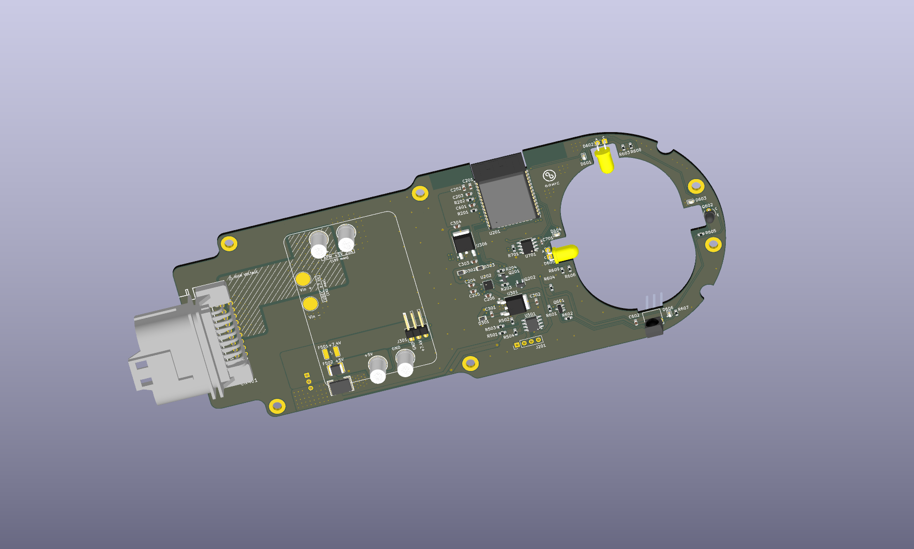

Step 01
Review the existing design
Analysis + dispositionsIdentify circuit risks. Verify recommendations and record the developer’s decisions.
Explore step 01 →From finding functional risks, to refining existing copper, to building a complete replacement. Explore the outputs alongside the developer’s assessment.
Powerful tool that speeds up workflow and review, captures functionality details that team may overlook in the deep pages of datasheets, but still requires human intervention in output consolidation and verification.
Identify circuit risks. Verify recommendations and record the developer’s decisions.
Explore step 01 →
Keep components and placement. Improve ground coverage and selected power traces.
Explore step 02 →
Generate a new schematic, PCB, 3D models and manufacturing package.
Explore step 03 →| Approach | Step 1 / Review | Step 2 / Refine | Step 3 / Redesign |
|---|---|---|---|
| Goal | Functional risks and corrections | Evaluate autonomous editing | Evaluate complete generation |
| Circuit / placement | Review only; developer implements selected changes | Updated baseline retained | New circuit and placements |
| PCB footprints* | Historical revision; count not compared | 78 → 78 | 78 → 69 |
| Copper | 1 oz design reviewed | 2 layers / 1 oz target | 2 layers / 2 oz specified |
| Recorded checks | 81 ERC findings; 10 DRC thermal errors | 0 DRC errors / 80 warnings | 0 ERC violations / 0 DRC errors / 4 warnings |
| Developer takeaway | Useful review; several fixes implemented | Good initiatives, incomplete execution | Promising foundation, needs extensive validation |
*Footprint totals include mechanical and board features; fewer footprints do not establish a lower-cost BOM. Step 1 and later checks refer to different revisions.
Top copper views for the updated original and refinement; the redesign is shown with its own exported copper view. Images may use different layer selections and render scales—compare topology, not pixels.

The existing pages remain at their original locations.
Step 1 was supplied as a PDF, so its new page is a concise presentation of that source.